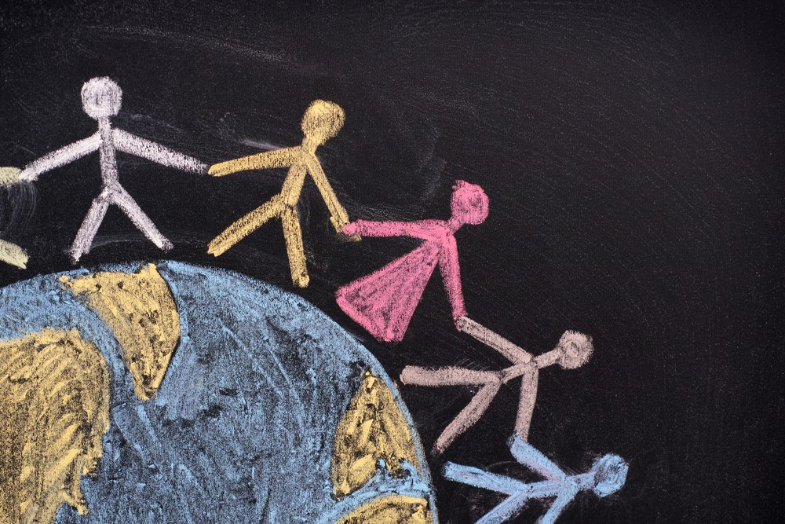
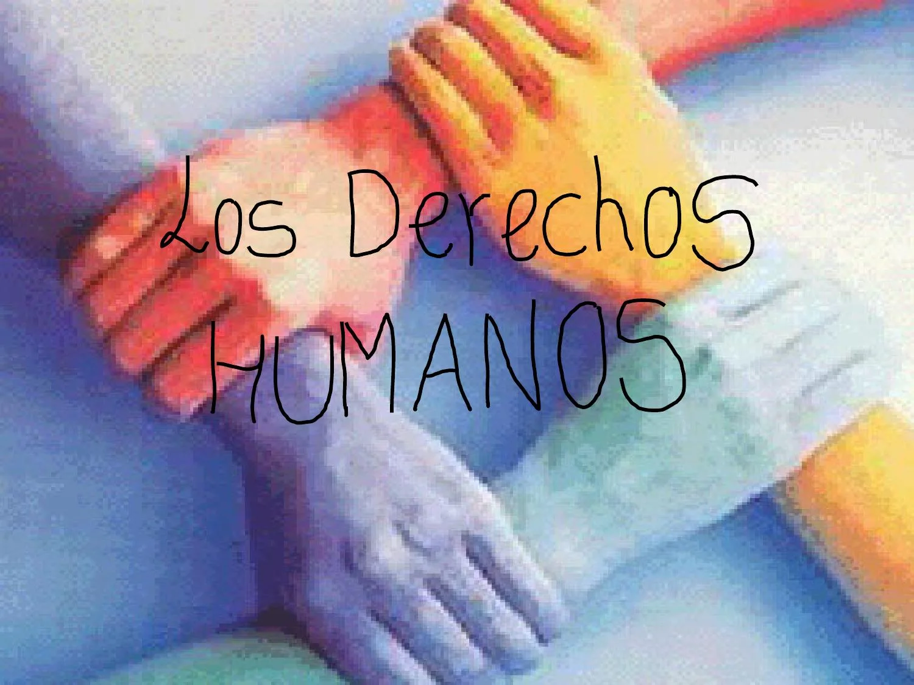
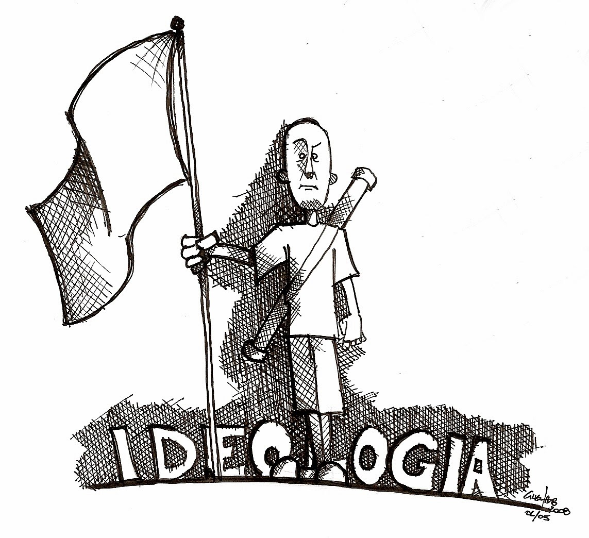
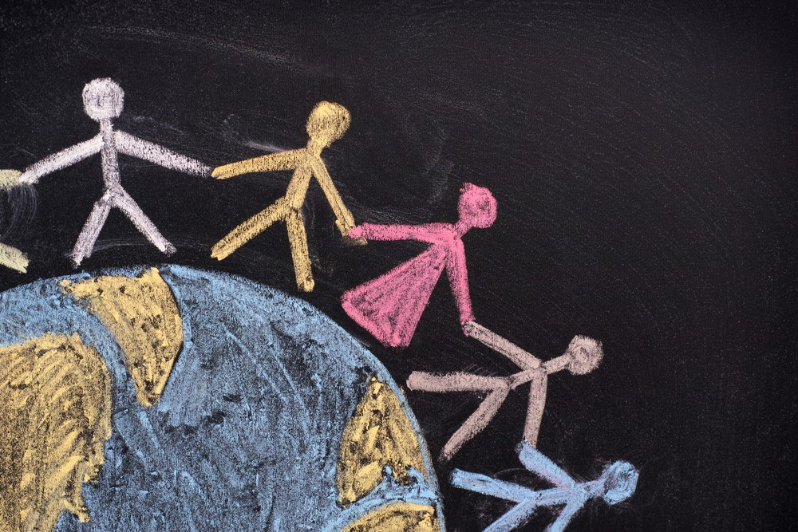
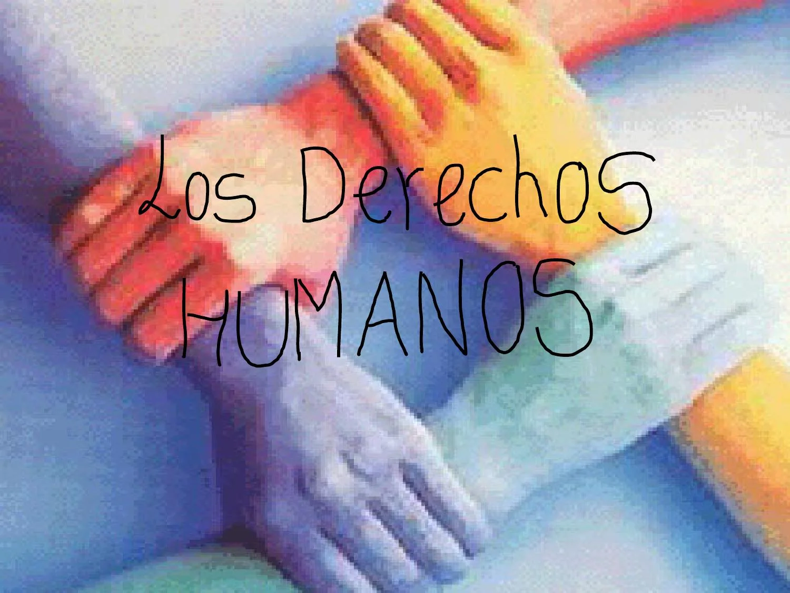
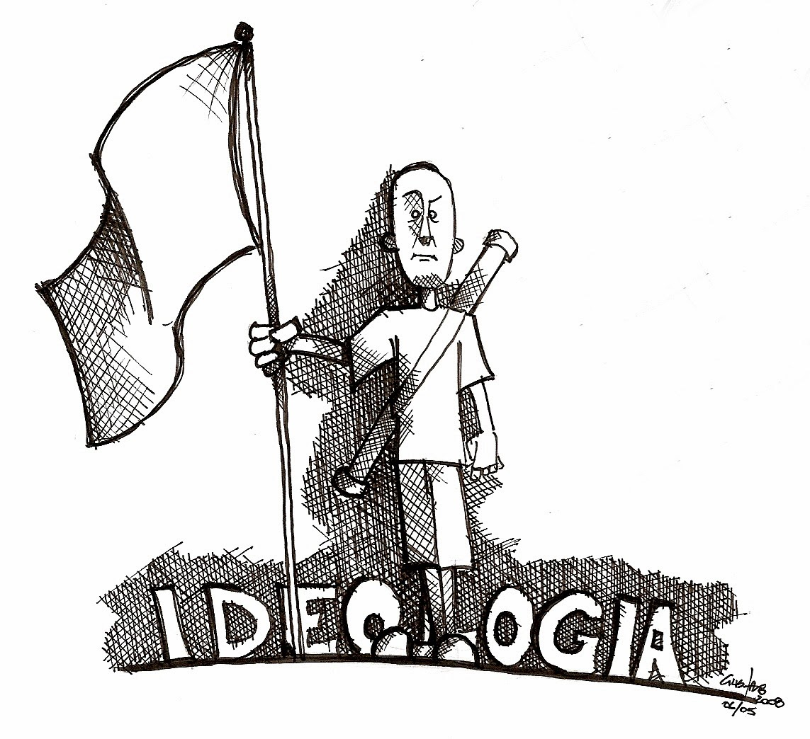

Seminario de definiciones
Este seminario se basó en la exposición y análisis de cada uno de los conceptos propuestos en clase.
- cultura de paz
- derechos humanos
- estado social de derecho
- Democracia
- Gobernabilidad
- Institucionalidad
- Paradigma
- Consenso
- Cultura política
¿Qué sabia acerca de estos conceptos?
Para empezar tenia una idea muy vaga acerca el concepto de los términos propuestos en clase, pero ya tenia un poco de conocimiento acerca de los derechos humanos
y sobre lo que era la cultura de paz y la importancia de estos mismos en la sociedad.
¿Que se habló en el aula de clases?
En el aula de clases logramos aclarar la importancia de cada uno de los términos y a su vez a compartir entre todos el conocimiento para llegar a una conclusión más clara
Cultura de Paz:
La cultura de paz es un enfoque que promueve la resolución pacífica de conflictos y la prevención de la violencia a través de la educación, el diálogo y la cooperación.

Derechos Humanos:
Los derechos humanos son derechos inherentes a todas las personas, independientemente de su origen, nacionalidad, género, religión, etc. Protegen la dignidad y la libertad de las personas.

Estado Social de Derecho:
Un estado social de derecho es un concepto en el que el gobierno garantiza no solo la protección de los derechos individuales, sino también el bienestar social y económico de sus ciudadanos.
Democracia:
La democracia es un sistema de gobierno en el que el poder político es ejercido por el pueblo a través de elecciones y representantes elegidos.

Gobernabilidad:
La gobernabilidad se refiere a la capacidad de un gobierno para tomar decisiones efectivas y gestionar los asuntos públicos de manera eficiente.
Institucionalidad:
La institucionalidad se relaciona con la existencia y el funcionamiento de las instituciones políticas y sociales que sustentan un sistema democrático.
Paradigma:
Un paradigma es un conjunto de creencias, valores y suposiciones que influyen en la forma en que se aborda un tema o se desarrolla una disciplina.
Consenso:
El consenso es un acuerdo o conformidad entre diferentes personas o grupos en una decisión o curso de acción.
Cultura Política:
La cultura política se refiere a las actitudes, valores y creencias políticas que prevalecen en una sociedad o comunidad.
Conclusión de la clase
La palabra "ideología" es relevante en el contexto de los conceptos que abordamos, ya que se refiere a un conjunto de creencias, valores y principios que influyen en la forma en que las personas y las sociedades entienden y abordan cuestiones políticas, sociales y culturales.
Gracias a esta corta sesión de clase pude aprender y aclarar muchas dudas sobre los diferentes temas que se abordaron. En resumen, estos conceptos están interconectados y se refuerzan mutuamente. Una cultura de paz, el respeto de los derechos humanos, un estado social de derecho, la democracia, una gobernabilidad efectiva, la institucionalidad, un paradigma político adecuado, el consenso y una cultura política positiva son elementos esenciales para construir sociedades justas, estables y prósperas. Cada uno de estos conceptos desempeña un papel crucial en el apoyo y el fortalecimiento de los demás.

- cultura de paz
- derechos humanos
- estado social de derecho
- Democracia
- Gobernabilidad
- Institucionalidad
- Paradigma
- Consenso
- Cultura política
¿Qué sabia acerca de estos conceptos?
Para empezar tenia una idea muy vaga acerca el concepto de los términos propuestos en clase, pero ya tenia un poco de conocimiento acerca de los derechos humanos y sobre lo que era la cultura de paz y la importancia de estos mismos en la sociedad.
¿Que se habló en el aula de clases?
En el aula de clases logramos aclarar la importancia de cada uno de los términos y a su vez a compartir entre todos el conocimiento para llegar a una conclusión más clara
La cultura de paz es un enfoque que promueve la resolución pacífica de conflictos y la prevención de la violencia a través de la educación, el diálogo y la cooperación.

Derechos Humanos:
Los derechos humanos son derechos inherentes a todas las personas, independientemente de su origen, nacionalidad, género, religión, etc. Protegen la dignidad y la libertad de las personas.

Un estado social de derecho es un concepto en el que el gobierno garantiza no solo la protección de los derechos individuales, sino también el bienestar social y económico de sus ciudadanos.
Democracia:
La democracia es un sistema de gobierno en el que el poder político es ejercido por el pueblo a través de elecciones y representantes elegidos.
La gobernabilidad se refiere a la capacidad de un gobierno para tomar decisiones efectivas y gestionar los asuntos públicos de manera eficiente.
Institucionalidad:
La institucionalidad se relaciona con la existencia y el funcionamiento de las instituciones políticas y sociales que sustentan un sistema democrático.
Un paradigma es un conjunto de creencias, valores y suposiciones que influyen en la forma en que se aborda un tema o se desarrolla una disciplina.
Consenso:
El consenso es un acuerdo o conformidad entre diferentes personas o grupos en una decisión o curso de acción.
Cultura Política:
La cultura política se refiere a las actitudes, valores y creencias políticas que prevalecen en una sociedad o comunidad.
La palabra "ideología" es relevante en el contexto de los conceptos que abordamos, ya que se refiere a un conjunto de creencias, valores y principios que influyen en la forma en que las personas y las sociedades entienden y abordan cuestiones políticas, sociales y culturales.
Gracias a esta corta sesión de clase pude aprender y aclarar muchas dudas sobre los diferentes temas que se abordaron. En resumen, estos conceptos están interconectados y se refuerzan mutuamente. Una cultura de paz, el respeto de los derechos humanos, un estado social de derecho, la democracia, una gobernabilidad efectiva, la institucionalidad, un paradigma político adecuado, el consenso y una cultura política positiva son elementos esenciales para construir sociedades justas, estables y prósperas. Cada uno de estos conceptos desempeña un papel crucial en el apoyo y el fortalecimiento de los demás.
